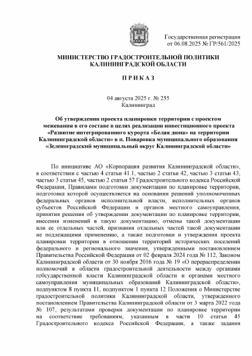
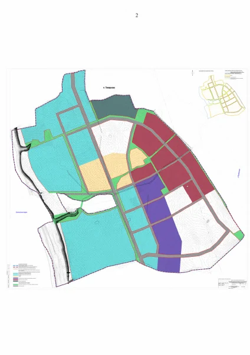
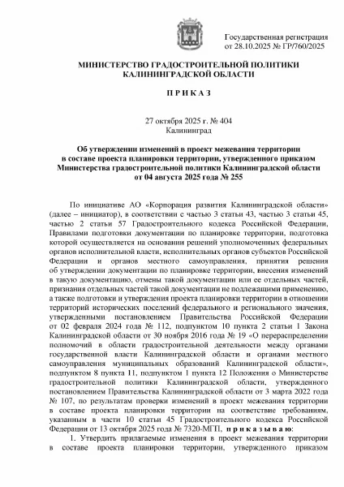
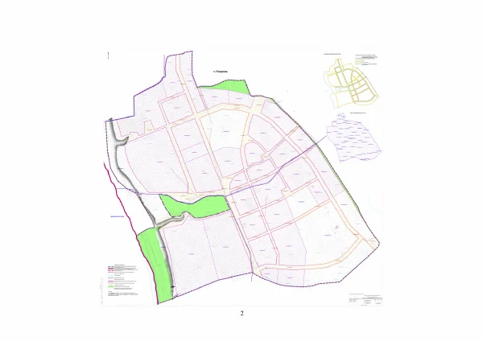
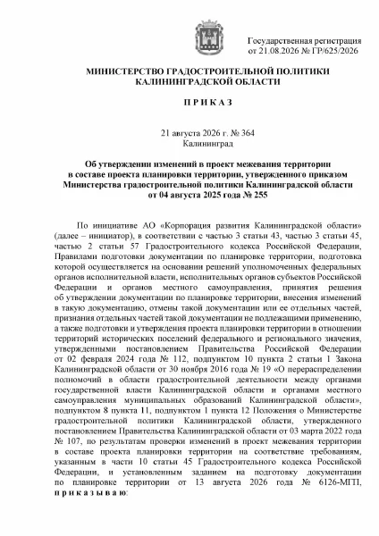
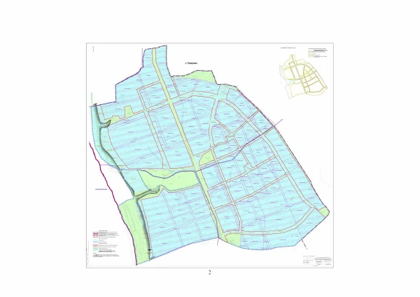

Рассмотреть страницу ↗Приказ №255 · Титульная страница
Планировка территории курорта и межевание в её составе
Открыть PDF Карточка в реестре ↗Свет на сайте
Сегодня · Калининград
В режиме «Авто» свет меняется вместе с солнцем.
Начало астрономической ночи для этих суток не рассчитано.
Спланировать вечерБраузер не сохранил выбор. На этой странице режим работает.
Балтийский
характер
рядом
Белая Дюна · первоисточники
Приказы и цветные схемы территории — прямо из документов. Авторские визуализации — в портфолио команд. От каждого изображения можно перейти к его источнику.
Данные на

Рассмотреть страницу ↗Планировка территории курорта и межевание в её составе
Открыть PDF Карточка в реестре ↗
Рассмотреть страницу ↗Планировка территории курорта и межевание в её составе
Открыть PDF Карточка в реестре ↗
Рассмотреть страницу ↗Изменения в проект межевания территории
Открыть PDF Карточка в реестре ↗
Рассмотреть страницу ↗Изменения в проект межевания территории
Открыть PDF Карточка в реестре ↗
Рассмотреть страницу ↗Утверждение изменений в проект межевания
Открыть PDF Карточка в реестре ↗
Рассмотреть страницу ↗Утверждение изменений в проект межевания
Открыть PDF Карточка в реестре ↗Дата под превью — дата приказа. Даты размещения и последовательность изменений — в реестре документов.
Песчаные клинья между кварталами
МЛА+ · Яна Голубева и команда
Визуализации у автора ↗Кварталы и янтарные ориентиры
Институт Генплана Москвы, Sheredega Consulting, Design Unit 4, MAParchitects, NF Group, MARTA · архитектурная часть MAParchitects
Визуализации у автора ↗Шесть миров в одном курортном маршруте
Wowhaus · Олег Шапиро, Дмитрий Ликин · руководитель проектной группы Дарья Ионова
Визуализации у автора ↗Обновлено 11 октября 2026.